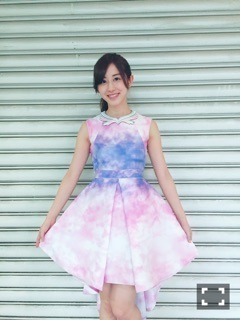
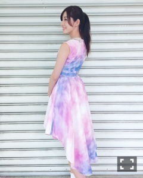

| 2016/06 25 Sat | 斎藤ちはる 私は意外とピンク娘。文字化け現象とは。(´>∀<｀)ゝ |
ちはるーむへようこそ\( ˆoˆ )/
今日はアルバムの個別握手会だったよ！！
にやり。
いくちゃんとお揃いだった♡
めーちゃん(ひめ)のセンター曲、
「君は僕と会わないほうがよかったのかな」の衣装だよ！！
いくちゃんが撮り終わった後
ひめたんびーむしてみた\( ˆ ˆ )/
って言ってたの〜
ひめたん愛に溢れる私たち。
中3組〜
ということで
4部は「君僕」衣装！
どんなポーズしようとしていたんだろう。
よく見たら手先がぶれぶれ。
この衣装は実はMVでも着てなくて、
アンダーライブでしか着たことなかったんだ！
レアな衣装だと思ったのもあるし
単純に可愛いから着てみたよ(﹡ˆ ˆ﹡)
本当は真っ赤な花冠もあって、
それもあるとより一層可愛いんだ〜
着けたかったな...
5部
「今、話したい誰かがいる」衣装！

襟元も可愛いんだけど、
後ろ姿がとっても可愛い♡

ひらひら揺れるスカートが、
マーメイドみたい( ◦˙ ˙◦ )
色合いもピンクと白と紫が混ざり合ってて
素敵な色〜！すき。
衣装に合わせてポニーテールにもしてみたよ♡
と、今回はピンクピンクな衣装にしました！
最近、気付いたら身の回りのものが
ピンクばっかりでびっくり。
財布も〜ポーチも〜リップポーチも〜充電器も〜筆箱も〜手帳も〜鏡も〜全てピンク。
でもどピンク！！ピンクピンク！！
みたいなのじゃなくて、淡いピンクが好き。
少しくすんだ色のピンクも好き。
ずー(かずみん)に
「ちーちゃんめっちゃピンク好きみたいじゃん！！」って今日言われて
改めて気付きました。
私、こう見えてピンクが好きだ。
意外と女子。
あれ、なんかピンクってたくさん書いてたら
ピンクって字が変に見える。。
本当にこんな字だっけ？って思っちゃう。。
たまにない！？
習字で同じ字をたくさん書いてたら
あれ、こんな変な形してたっけ？って！！
この現象なんて言うんだろう。。
あるあるだと思うんだけど。。
文字化け現象かも。
これが本当の。
文字が変な形に化けて見える現象。
誰か正式名称教えて。。
前々回の、あまのじゃく現象の正式名称は、
「セルフハンディキャッピング」
と言うんだって！
コメントで皆さんが教えてくれました。
ひとつ賢くなれました。
ありがとうございます(> <)！！
と、まあ、ピンク娘(私のこと)は置いておいて。
握手会来て下さった方ありがとうございました( ;o; )！
本当に毎回毎回思うのが
皆さんがいるから私は頑張れる。
辛いことがあっても背中を押してくれる
皆さんがいるから頑張っていける。
背中を押してくれてありがとう。
支えてくれてありがとう。
頑張れって言ってくれてありがとう。
たくさんのありがとうを、ありがとう。
色々な事情で握手会に来れない方もたくさんいると思います。
受験勉強だったり、試験勉強だったり、
仕事やバイトが忙しかったり、
家が遠くてなかなか来れなかったり。
そんな方々にもいつか会えたらいいな。
その日を楽しみに待ってるね。
乃木坂の衣装、すき。
皆さんは何の衣装が好き？？
斎藤ちはる